# Run once to install
install.packages(c("tidyverse", "heatwaveR", "maps"))Heatwaves and Cold-spells
Authors: Nicholas Wu
Detecting, describing and classifying extreme temperature events with a structured, reproducible workflow following the heatwaveR package R (Schlegel and Smit, 2018).
Background
What is a heatwave?
In everyday language a heatwave is “a run of unusually hot days”. To compare events between places, seasons and decades we need a precise, relative definition. In a relative definition, “unusually hot” means hot for that place and time of year, so a 25 °C day can be a heatwave in winter but not in summer.
For the ocean, Hobday et al. (2016) defined a marine heatwave (MHW) as a prolonged discrete anomalously warm water event and operationalised it as at least 5 consecutive days above a seasonally varying 90th percentile threshold, calculated from a 30-year baseline (climatology) period, with events separated by 2 days or fewer joined together (Figure 1). The same algorithm, with the 10th percentile and temperatures below the threshold, detects marine cold-spells (MCS) (Schlegel et al., 2017; Schlegel et al., 2021). Hobday et al. (2018) then named events by their category: how many multiples of the threshold–climatology difference the peak exceeds (I Moderate, II Strong, III Severe, IV Extreme).
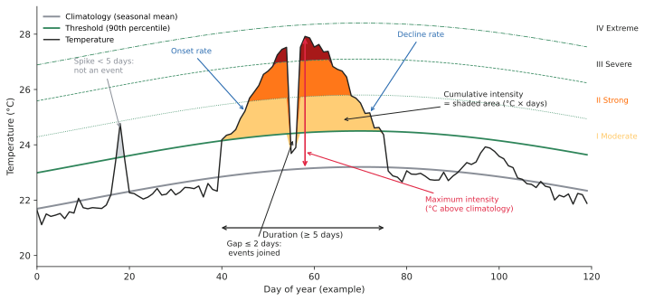
For the atmosphere, there is no single universal definition. Definitions use daily maximum (Tmax), minimum (Tmin) or mean temperature, relative (percentile) or absolute thresholds, heat-stress indices that combine temperature and humidity, and minimum durations that are usually 3 days (Nairn and Fawcett, 2015; Perkins, 2015; Perkins and Alexander, 2013). Perkins and Alexander (2013) recommended describing heatwaves with a small set of metrics (number, frequency, duration, amplitude and magnitude), which maps closely onto the metrics in Figure 1.
The table below summarises the main metrics returned by heatwaveR:
| Metric | Meaning | Units (daily data) |
|---|---|---|
duration |
Days from start to end of the event | days |
intensity_max |
Peak temperature anomaly relative to the climatology | °C |
intensity_mean |
Mean anomaly over the event | °C |
intensity_cumulative |
Sum of daily anomalies (area under the curve) | °C × days |
rate_onset, rate_decline |
How fast the event developed and decayed | °C day-1 |
*_relThresh, *_abs |
Same intensities relative to the threshold, or as absolute temperatures | °C |
Why are heatwaves important in thermal ecology?
Extreme events, not just gradual warming, drive many of the biggest ecological responses to climate change (Harris et al., 2018). Marine heatwaves have become longer and more frequent over the past century (Oliver et al., 2018), and they cause mass mortality, range shifts and loss of habitat-forming species (Smale et al., 2019; Smith et al., 2023). The 2011 Western Australian MHW, the dataset you will analyse below, contributed to a regime shift from kelp forests to seaweed turfs (Wernberg et al., 2016). On land, heatwaves are projected to become more frequent, persistent and intense across almost all inhabited regions (Domeisen et al., 2023).
Why a structured, reproducible workflow?
The number, duration and intensity of events you detect depend on many choices: the dataset, the baseline period, the percentile, the minimum duration, how gaps and missing data are treated, and whether the time series is detrended. These choices are often under-reported, so results from different studies are hard to compare or synthesise (Amaya et al., 2023; Hobday et al., 2016; Schlegel et al., 2019).
A shared algorithm implemented in open code solves much of this. heatwaveR is the R implementation of the Hobday et al. definitions (a faster successor to the original Python and RmarineHeatWaves code), works on air and water temperatures, on daily and hourly data, and makes every parameter an explicit, reportable function argument (Schlegel and Smit, 2018). Writing the workflow as code means you can rerun it when new data arrive, apply it identically to thousands of grid cells, and share it with your paper.
Common problems
| Problem | Effect on detected events | How to handle it |
|---|---|---|
| Short time series (< 30 years) | Unstable percentiles; thresholds too low or too high | Use ≥ 30 years where possible; report the baseline; see Schlegel et al. (2019) |
| Missing data | Events split into pieces or missed | Report % missing; interpolate short gaps only (maxPadLength); see Schlegel et al. (2019) |
| Long-term trend in the data | With a fixed baseline, late years are “always in a heatwave” | Decide (and report) fixed vs. shifting baseline or detrending (Amaya et al., 2023) |
| Choice of baseline period | Different baselines give different event counts | Use a standard 30-year period (e.g. 1982–2011 for OISST; WMO 1991–2020) and report it |
| Resolution (daily vs. hourly; satellite vs. in situ) | Daily means hide extremes that organisms feel | Match the data resolution to the biological question |
Definition choices (percentile, minDuration, maxGap) |
Event number and duration change | Use established defaults (5/2 marine, 3/1 atmospheric) or justify alternatives |
| Events at the ends of the series | rate_onset/rate_decline are NA; durations truncated |
Interpret edge events with care |
| Hemisphere and season | Wrong season labels in category() |
Set S = TRUE for the southern hemisphere |
| Relative vs. absolute stress | A “Severe” winter event may be biologically harmless | Combine relative events with absolute, organism-specific thresholds (see Caveats) |
Without a reproducible workflow there are additional problems: thresholds computed once in a spreadsheet and copied between sites, baseline periods that silently differ between analyses, missing-data handling that is never documented, and results that cannot be updated when new data arrive.
Example Workflow
At minimum, your data need:
- a date column (class
Date, “YYYY-MM-DD”) for daily data, or a date-time column (classPOSIXct, on the hour) for hourly data, namedtby default; and - a temperature column, named
tempby default (other names can be passed with thexandyarguments).
library(tidyverse) # data wrangling and plotting
library(heatwaveR) # heatwave and cold-spell detectionThe workflow has three core steps: build a climatology and threshold with ts2clm(), detect events with detect_event(), and classify them with category().
heatwaveR comes with four example datasets:
| Dataset | Content | Period |
|---|---|---|
sst_WA |
Daily sea surface temperature (SST), Western Australia | 1982–2022 |
sst_NW_Atl |
Daily SST, Northwest Atlantic | 1982–2022 |
sst_Med |
Daily SST, Mediterranean | 1982–2022 |
Algiers |
Daily air Tmax and Tmin, Algiers (Algeria) | 1961–2005 |
Import
The example data are already loaded with the package. With your own data, the pattern is: read, fix column types, and aggregate to the resolution you need.
# Example only: a logger file with a date-time column and temperature
my_daily <- read_csv("data/my_logger.csv") |>
mutate(date_time = ymd_hms(date_time)) |>
group_by(t = as_date(date_time)) |>
summarise(temp = mean(temp, na.rm = TRUE), .groups = "drop")sst_WA#> # A tibble: 14,975 × 2
#> t temp
#> <date> <dbl>
#> 1 1982-01-01 20.9
#> 2 1982-01-02 21.2
#> 3 1982-01-03 21.4
#> 4 1982-01-04 21.2
#> 5 1982-01-05 21.3
#> 6 1982-01-06 21.6
#> 7 1982-01-07 21.7
#> 8 1982-01-08 21.5
#> 9 1982-01-09 21.4
#> 10 1982-01-10 21.4
#> # ℹ 14,965 more rowsQuality check
Before detecting anything, check that the record is long enough, complete, regular and free of duplicates, and look at it.
check_series <- function(df) {
df |>
summarise(start = min(t),
end = max(t),
years = round(as.numeric(end - start) / 365.25, 1),
n_days = n(),
n_expected = as.numeric(end - start) + 1,
n_missing = sum(is.na(temp)) + (n_expected - n_days),
n_dup = sum(duplicated(t)))
}
check_series(sst_WA)#> # A tibble: 1 × 7
#> start end years n_days n_expected n_missing n_dup
#> <date> <date> <dbl> <int> <dbl> <dbl> <int>
#> 1 1982-01-01 2022-12-31 41 14975 14975 0 0wa_annual <- sst_WA |>
group_by(year = year(t)) |>
summarise(temp = mean(temp))
ggplot() +
geom_line(data = sst_WA, aes(x = t, y = temp), colour = "grey70", linewidth = 0.2) +
geom_line(data = wa_annual, aes(x = as.Date(paste0(year, "-07-01")), y = temp)) +
geom_smooth(data = wa_annual, aes(x = as.Date(paste0(year, "-07-01")), y = temp),
method = "lm", se = FALSE, colour = "#e12744") +
labs(x = NULL, y = "SST (°C)") +
theme_linedraw()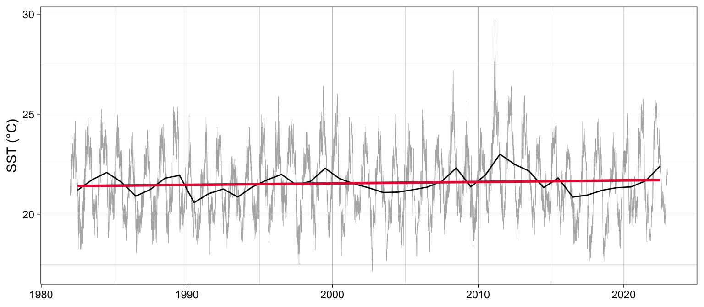
The record is 41 years long with no gaps, which is ideal. Note the warming trend: with a fixed 1982–2011 baseline, warmer recent years will produce more events. This is not an error, but it is a decision to report (see Caveats).
Detect events
Marine heatwaves
ts2clm() calculates, for each day of the year, the climatological mean (seas) and the 90th percentile threshold (thresh) from the baseline period, pooling values within ±5 days (windowHalfWidth) and smoothing with a 31-day moving average (smoothPercentileWidth). detect_event() then finds runs of days above the threshold.
ts_WA <- ts2clm(sst_WA, climatologyPeriod = c("1982-01-01", "2011-12-31"))
mhw_WA <- detect_event(ts_WA) # defaults: minDuration = 5, maxGap = 2
ts_WA |> head()#> doy t temp seas thresh
#> 1 1 1982-01-01 20.94 21.5621 22.8627
#> 2 2 1982-01-02 21.25 21.5874 22.8899
#> 3 3 1982-01-03 21.38 21.6133 22.9199
#> 4 4 1982-01-04 21.16 21.6396 22.9494
#> 5 5 1982-01-05 21.26 21.6658 22.9755
#> 6 6 1982-01-06 21.61 21.6912 22.9977detect_event() returns a list with a climatology data frame (the daily data with the threshold and event flags) and an event data frame (one row per event).
mhw_WA$event |>
select(event_no, duration, date_start, date_peak,
intensity_max, intensity_cumulative) |>
arrange(desc(intensity_max)) |>
head(5)#> event_no duration date_start date_peak intensity_max intensity_cumulative
#> 1 52 105 2010-12-24 2011-02-28 6.5798 293.2107
#> 2 41 35 2008-03-25 2008-04-14 3.8299 79.3307
#> 3 29 95 1999-05-13 1999-05-22 3.6390 240.2994
#> 4 60 14 2012-12-27 2012-12-31 3.4230 32.2560
#> 5 59 101 2012-01-10 2012-01-27 3.3804 214.0509The largest event is the 2011 “Ningaloo Niño” heatwave. event_line() and lolli_plot() give quick visual summaries.
event_line(mhw_WA, spread = 180, metric = intensity_max,
start_date = "1982-01-01", end_date = "2014-12-31") +
theme(legend.position = "bottom")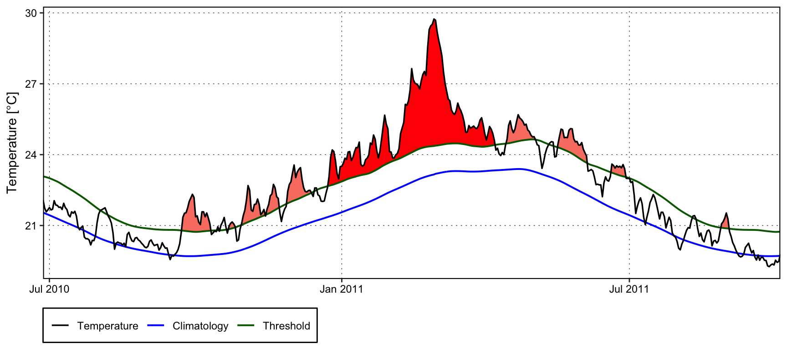
event_line().
lolli_plot(mhw_WA, metric = intensity_max)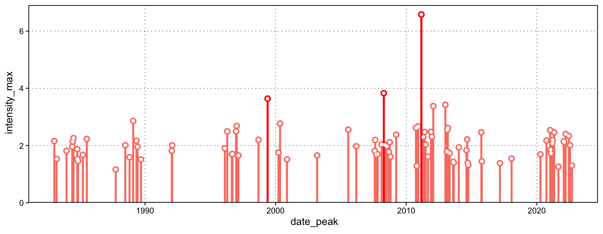
lolli_plot().
For full control, geom_flame() adds the event “flames” to any ggplot. In Fig. 5, the timespan is from the 11th November 2010 to 32st May 2011.
mhw_WA$climatology |>
filter(t >= as.Date("2010-11-01"), t <= as.Date("2011-05-31")) |>
ggplot(aes(x = t)) +
geom_flame(aes(y = temp, y2 = thresh), fill = "#e12744") +
geom_line(aes(y = temp), colour = "black") +
geom_line(aes(y = seas), colour = "grey50", linewidth = 1) +
geom_line(aes(y = thresh), colour = "forestgreen", linewidth = 0.8) +
labs(x = NULL, y = "SST (°C)") +
theme_linedraw()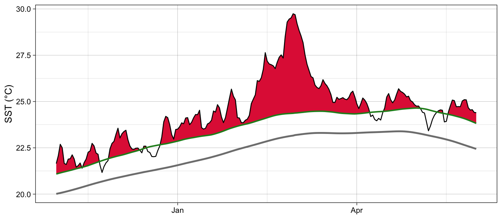
geom_flame().
Marine cold-spells
Cold-spells use the 10th percentile threshold and coldSpells = TRUE.
ts_WA_10 <- ts2clm(sst_WA, climatologyPeriod = c("1982-01-01", "2011-12-31"),
pctile = 10)
mcs_WA <- detect_event(ts_WA_10, coldSpells = TRUE)
mcs_WA$event |>
select(event_no, duration, date_start, date_peak,
intensity_max, intensity_cumulative) |>
arrange(intensity_cumulative) |>
head(5)#> event_no duration date_start date_peak intensity_max intensity_cumulative
#> 1 15 76 1990-04-13 1990-05-11 -3.1883 -190.2043
#> 2 49 58 2003-12-19 2004-01-23 -2.5865 -100.5806
#> 3 83 41 2020-04-26 2020-05-25 -3.1433 -95.8339
#> 4 64 52 2014-04-14 2014-05-05 -2.5358 -92.6844
#> 5 77 46 2018-07-24 2018-08-02 -2.4311 -83.2407Intensities of cold-spells are negative (below the climatology).
Atmospheric heatwaves and cold-spells
For air temperature we follow the common atmospheric convention of at least 3 consecutive days above the 90th percentile of Tmax (heatwaves) or below the 10th percentile of Tmin (cold-spells) (Perkins and Alexander, 2013), and join gaps of 1 day (the atmospheric default suggested in the heatwaveR documentation). Because the column is not called temp, tell both functions which column to use with y.
ts_alg_tmax <- ts2clm(Algiers, y = tMax,
climatologyPeriod = c("1961-01-01", "1990-12-31"))
hw_alg <- detect_event(ts_alg_tmax, y = tMax, minDuration = 3, maxGap = 1)
ts_alg_tmin <- ts2clm(Algiers, y = tMin, pctile = 10,
climatologyPeriod = c("1961-01-01", "1990-12-31"))
cs_alg <- detect_event(ts_alg_tmin, y = tMin, coldSpells = TRUE,
minDuration = 3, maxGap = 1)
bind_rows(heatwave = hw_alg$event,
coldspell = cs_alg$event, .id = "type") |>
group_by(type) |>
summarise(n_events = n(),
mean_duration = mean(duration),
max_intensity = max(abs(intensity_max)))#> # A tibble: 2 × 4
#> type n_events mean_duration max_intensity
#> <chr> <int> <dbl> <dbl>
#> 1 coldspell 158 4.03 9.45
#> 2 heatwave 173 4.25 17.2lolli_plot(hw_alg, metric = intensity_max)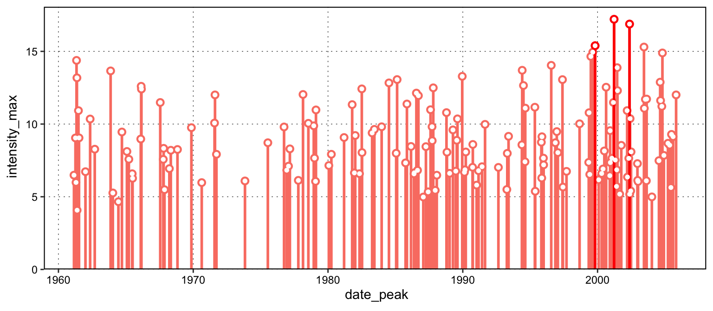
Classify severity
category() assigns each event a Hobday et al. (2018) category and season. Western Australia is in the southern hemisphere, so set S = TRUE.
mhw_cat_WA <- category(mhw_WA, S = TRUE, name = "WA")
mhw_cat_WA |> head()#> event_no event_name peak_date category i_max duration p_moderate p_strong
#> 1 1 <NA> 1983-01-20 I Moderate 2.1562 5 100 0
#> 2 2 <NA> 1983-03-25 I Moderate 1.5273 6 100 0
#> 3 3 <NA> 1983-12-28 I Moderate 1.8151 5 100 0
#> 4 4 <NA> 1984-06-05 I Moderate 1.9576 10 100 0
#> 5 5 <NA> 1984-06-19 I Moderate 2.1346 6 100 0
#> 6 6 <NA> 1984-07-10 I Moderate 2.2590 19 100 0
#> p_severe p_extreme season
#> 1 0 0 Summer
#> 2 0 0 Summer
#> 3 0 0 Spring
#> 4 0 0 Fall
#> 5 0 0 Fall
#> 6 0 0 Fall/Wintermhw_cat_WA |> count(category)#> category n
#> 1 I Moderate 67
#> 2 II Strong 21
#> 3 III Severe 1
#> 4 IV Extreme 1event_line(mhw_WA, spread = 100, start_date = "2010-11-01",
end_date = "2011-06-30", category = TRUE) 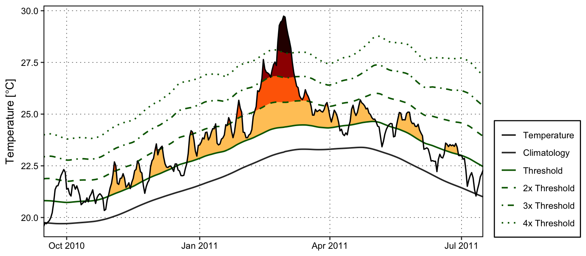
The same function classifies cold-spells; it detects that it has been given cold-spells.
mcs_cat_WA <- category(mcs_WA, S = TRUE, name = "WA")
mcs_cat_WA |> count(category)#> category n
#> 1 I Moderate 68
#> 2 II Strong 18Absolute thresholds with exceedance()
Sometimes the relevant question is not “unusually hot for this place?” but “above a temperature that harms my organism?”. exceedance() detects runs above (or, with below = TRUE, below) a fixed threshold.
exc_26 <- exceedance(sst_WA, threshold = 26, minDuration = 5, maxGap = 2)
exc_26$exceedance |>
select(exceedance_no, date_start, duration, intensity_max) |>
arrange(desc(duration)) |>
head(5)#> exceedance_no date_start duration intensity_max
#> 1 3 2011-02-10 29 3.74
#> 2 2 2008-04-08 11 1.19
#> 3 1 1999-05-21 5 0.40Daily means smooth out the afternoon peaks and night-time lows that organisms actually experience. heatwaveR (from v0.5.4) also accepts hourly data, with a POSIXct time column on exact hours. All window and duration arguments are then in hours.
heatwaveR does not include an hourly dataset, so we reconstruct one from the daily Algiers Tmax and Tmin with a simple sine-shaped diurnal cycle (maximum at 15:00, minimum at 03:00). Real diurnal cycles are asymmetric, so this is for teaching only; with your own logger data you would skip this step.
Import
# Hourly code is time-zone sensitive: work in UTC to avoid daylight saving shifts
Sys.setenv(TZ = "UTC")
alg_hourly <- Algiers |>
filter(t >= as.Date("1971-01-01")) |> # 35 years keeps run time short
uncount(24, .id = "hour") |>
mutate(hour = hour - 1,
temp = (tMax + tMin) / 2 +
(tMax - tMin) / 2 * cos(2 * pi * (hour - 15) / 24),
t = as.POSIXct(t, tz = "UTC") + hour * 3600) |>
select(t, temp) |>
arrange(t)
alg_hourly |> head()#> t temp
#> 1 1971-01-01 00:00:00 5.759010
#> 2 1971-01-01 01:00:00 5.401443
#> 3 1971-01-01 02:00:00 5.176667
#> 4 1971-01-01 03:00:00 5.100000
#> 5 1971-01-01 04:00:00 5.176667
#> 6 1971-01-01 05:00:00 5.401443Quality check
alg_hourly |>
summarise(start = min(t),
end = max(t),
n_hours = n(),
n_expected = as.numeric(difftime(end, start, units = "hours")) + 1,
off_the_hour = sum(minute(t) != 0 | second(t) != 0),
n_missing = sum(is.na(temp)))#> start end n_hours n_expected off_the_hour n_missing
#> 1 1971-01-01 2005-12-31 23:00:00 306816 306816 0 0alg_hourly |>
filter(t >= as.POSIXct("2003-07-01", tz = "UTC"),
t < as.POSIXct("2003-08-01", tz = "UTC")) |>
ggplot(aes(x = t, y = temp)) +
geom_line() +
geom_point(data = Algiers |>
filter(t >= as.Date("2003-07-01"), t < as.Date("2003-08-01")) |>
pivot_longer(c(tMax, tMin), values_to = "temp") |>
mutate(t = as.POSIXct(t, tz = "UTC") + if_else(name == "tMax", 15, 3) * 3600),
aes(colour = name)) +
scale_colour_manual(values = c(tMax = "#e12744", tMin = "#2b6cb0")) +
labs(x = NULL, y = "Air temperature (°C)", colour = NULL) +
theme_linedraw()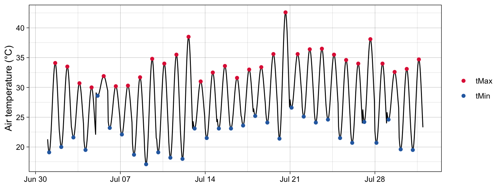
Detect events
Scale every time-based argument from days to hours: a ±5-day window becomes windowHalfWidth = 5 * 24, the 31-day smoothing becomes smoothPercentileWidth = 31 * 24, and so on. Here we require at least 3 days (72 h) above the hour-of-year 90th percentile and allow gaps of up to 12 h (e.g. a slightly cooler night) to be joined. These are choices you must report.
ts_alg_h <- ts2clm(alg_hourly,
climatologyPeriod = c("1971-01-01", "2000-12-31"),
windowHalfWidth = 5 * 24,
smoothPercentileWidth = 31 * 24)
hw_alg_h <- detect_event(ts_alg_h, minDuration = 3 * 24, maxGap = 12)
hw_alg_h$event |>
select(event_no, date_start, date_peak, duration,
intensity_max, intensity_cumulative) |>
arrange(desc(intensity_max)) |>
head(5)#> event_no date_start date_peak duration intensity_max
#> 1 1 1987-10-25 1987-10-26 15:00:00 72 17.9398
#> intensity_cumulative
#> 1 868.0221Durations are in hours and cumulative intensity in °C × hours.
top_h <- hw_alg_h$event |> slice_max(intensity_max, n = 1)
hw_alg_h$climatology |>
filter(t >= top_h$date_start - 3 * 86400,
t <= top_h$date_end + 3 * 86400) |>
ggplot(aes(x = t)) +
geom_ribbon(aes(ymin = thresh, ymax = pmax(temp, thresh)),
fill = "#e12744", alpha = 0.5) +
geom_line(aes(y = seas), colour = "grey50", linewidth = 0.8) +
geom_line(aes(y = thresh), colour = "forestgreen", linewidth = 0.8) +
geom_line(aes(y = temp)) +
labs(x = NULL, y = "Air temperature (°C)") +
theme_linedraw()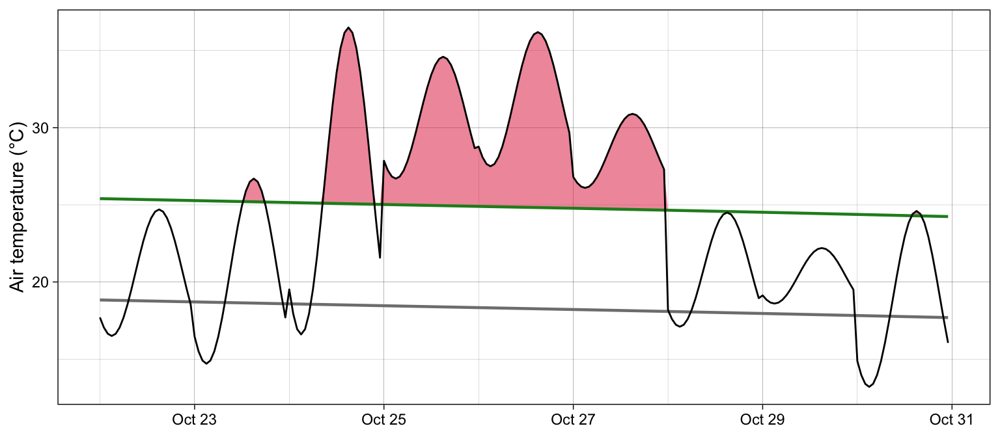
Hourly cold-spells work the same way:
ts_alg_h10 <- ts2clm(alg_hourly,
climatologyPeriod = c("1971-01-01", "2000-12-31"),
windowHalfWidth = 5 * 24,
smoothPercentileWidth = 31 * 24,
pctile = 10)
cs_alg_h <- detect_event(ts_alg_h10, coldSpells = TRUE,
minDuration = 3 * 24, maxGap = 12)
nrow(cs_alg_h$event)#> [1] 1Gridded products such as NOAA OISST give one time series per pixel. Detecting events on a grid is the same workflow applied to each pixel with group_by() + group_modify(). Here the three SST datasets play the role of three pixels.
sites <- bind_rows(
sst_WA |> mutate(site = "WA", lon = 112.625, lat = -29.375),
sst_NW_Atl |> mutate(site = "NW_Atl", lon = -66.875, lat = 43.125),
sst_Med |> mutate(site = "Med", lon = 9.125, lat = 43.625)
)
# One function per pixel: climatology -> events -> categories
event_cat <- function(df, key) {
df |>
ts2clm(climatologyPeriod = c("1982-01-01", "2011-12-31")) |>
detect_event() |>
category(S = key$lat < 0, name = key$site)
}
mhw_sites <- sites |>
group_by(site, lon, lat) |>
group_modify(\(df, key) event_cat(df, key)) |>
ungroup()
mhw_sites |> count(site, category)#> # A tibble: 10 × 3
#> site category n
#> <chr> <chr> <int>
#> 1 Med I Moderate 80
#> 2 Med II Strong 41
#> 3 Med III Severe 2
#> 4 NW_Atl I Moderate 92
#> 5 NW_Atl II Strong 32
#> 6 NW_Atl III Severe 6
#> 7 WA I Moderate 67
#> 8 WA II Strong 21
#> 9 WA III Severe 1
#> 10 WA IV Extreme 1site_summary <- mhw_sites |>
group_by(site, lon, lat) |>
summarise(n_events = n(), mhw_days = sum(duration), .groups = "drop")
ggplot(site_summary, aes(x = lon, y = lat)) +
annotation_borders("world", fill = "grey85", colour = NA) +
geom_point(aes(size = mhw_days), colour = "#e12744") +
geom_text(aes(label = site), nudge_y = 9) +
coord_quickmap(xlim = c(-100, 160), ylim = c(-50, 70)) +
labs(x = NULL, y = NULL, size = "MHW days") +
theme_linedraw()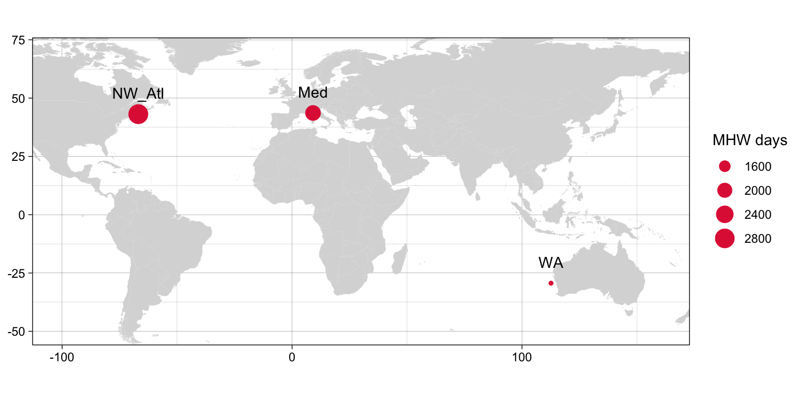
Trends in event frequency are commonly tested per pixel with a Poisson GLM of annual counts:
mhw_counts <- mhw_sites |>
count(site, year = year(peak_date)) |>
complete(site, year = 1982:2022, fill = list(n = 0))
mhw_counts |>
nest(data = -site) |>
mutate(fit = map(data, \(d) glm(n ~ year, family = poisson, data = d)),
tidy = map(fit, broom::tidy)) |>
unnest(tidy) |>
filter(term == "year") |>
transmute(site,
change_per_decade = exp(estimate * 10), # multiplicative change
p.value)#> # A tibble: 3 × 3
#> site change_per_decade p.value
#> <chr> <dbl> <dbl>
#> 1 Med 1.64 0.00000000378
#> 2 NW_Atl 1.34 0.000143
#> 3 WA 1.27 0.00866Activities
Reporting the Workflow
Because the definition determines the result, report every parameter needed to reproduce the detection:
| Item | Example |
|---|---|
| Data source, resolution and processing | NOAA OISST v2.1, 0.25°, daily; or logger model, depth, sampling interval, aggregation to daily mean |
| Record length and missing data | 1982–2022; 0% missing; gaps ≤ 2 days linearly interpolated (maxPadLength = 2) |
| Baseline (climatology) period | 1982-01-01 to 2011-12-31; fixed or shifting; detrended or not |
| Threshold | 90th (heatwaves) / 10th (cold-spells) percentile; or absolute value with exceedance() |
| Climatology settings | windowHalfWidth = 5, smoothPercentileWidth = 31 (in hours × 24 for hourly data) |
| Event definition | minDuration = 5, maxGap = 2 (marine) or 3 and 1 (atmospheric) |
| Categories | Hobday et al. (2018), S = TRUE/FALSE |
| Software | R and heatwaveR versions; cite Schlegel and Smit (2018), Hobday et al. (2016), Hobday et al. (2018) |
| Code and outputs | Script, event table and climatology in a public repository |
dir.create("output", showWarnings = FALSE)
write_csv(mhw_WA$event, "output/mhw_WA_events.csv")
write_csv(mhw_cat_WA, "output/mhw_WA_categories.csv")
sessionInfo()
citation("heatwaveR")As with any analysis, the methods text can be generated from the objects themselves:
Marine heatwaves were detected in daily SST (1982–2022) with
heatwaveRv0.5.5 (Schlegel and Smit, 2018), following Hobday et al. (2016): periods of ≥ 5 days above the seasonally varying 90th percentile of a 1982–2011 climatology, with gaps of ≤ 2 days joined. We detected 90 events, categorised following Hobday et al. (2018).
Caveats
A heatwave definition describes the environment, not the organism. Translating events into biological impact needs care.
- Relative ≠ harmful. Percentile thresholds and categories measure how unusual a temperature is for that place and season, not whether it exceeds an organism’s tolerance. A Severe winter event may be harmless and a Moderate summer event lethal (Smith et al., 2023).
- Environment ≠ body temperature. Air or satellite SST rarely equals the body temperature of an organism in a burrow, under a rock, in the intertidal or at depth. Microclimate and biophysical models help bridge this gap (Kearney and Porter, 2009; Sinclair et al., 2016).
- Resolution matters. Daily means hide the hours of peak heat; tolerance is non-linear, so averaging underestimates damage (Figure 11).
- Intensity and duration interact. Thermal tolerance is a function of both temperature and exposure time: the thermal death time (TDT) curve (Jørgensen et al., 2019; Rezende et al., 2014). Short, intense events and long, moderate events can be equally damaging.
- Damage accumulates (and sometimes repairs). Injury can be summed across a fluctuating temperature trace by integrating the rate of injury (\(1/\text{LT}(T)\)) over time (Jørgensen et al., 2021; Rezende et al., 2020). Below a critical temperature (\(T_c\)) damage may not accumulate and repair can occur (Ørsted et al., 2022). Acclimation, hardening, life stage and behaviour all modify the outcome.
- Sub-lethal effects (on growth, reproduction and performance) can occur well below lethal limits and over longer timescales (Harris et al., 2018).
- Small warming, big effects. Because heat-failure rates rise exponentially with temperature, modest increases in peak temperatures can greatly increase the frequency of heat failure (Jørgensen et al., 2022).
- Baselines for biology. For organisms that cannot acclimate or adapt as fast as the climate warms, a fixed historical baseline may better represent stress than a shifting one (Amaya et al., 2023).
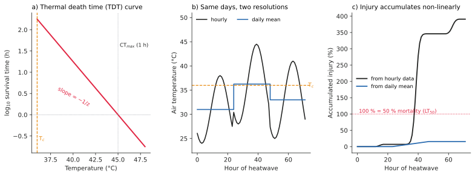
The TDT model is
\[ \log_{10}\text{LT}(T) = \frac{CT_{\max,1h} - T}{z}, \qquad \text{injury} = \sum_{T_i \ge T_c} \frac{\Delta t}{\text{LT}(T_i)} \]
where LT is the time (h) to 50% mortality at temperature \(T\), \(CT_{\max,1h}\) is the temperature giving LT = 1 h, and \(z\) is the thermal sensitivity (Jørgensen et al., 2021; Rezende et al., 2014). An accumulated injury of 1 (100%) predicts 50% mortality.
# Injury rate (per hour) for a temperature, given TDT parameters
injury_rate <- function(temp, ctmax_1h, z, t_c) {
if_else(temp >= t_c, 10^((temp - ctmax_1h) / z), 0)
}Activities: biological impact
Citation
When using heatwaveR, please cite Schlegel and Smit (2018), and the definitions you used (Hobday et al., 2016; Hobday et al., 2018).
References
Amaya, D. J., Jacox, M. G., Fewings, M. R., Saba, V. S., Stuecker, M. F., Rykaczewski, R. R., Ross, A. C., Stock, C. A., Capotondi, A., Petrik, C. M., et al. (2023). Marine heatwaves need clear definitions so coastal communities can adapt. Nature 616, 29–32.
Domeisen, D. I. V., Eltahir, E. A. B., Fischer, E. M., Knutti, R., Perkins-Kirkpatrick, S. E., Schär, C., Seneviratne, S. I., Weisheimer, A. and Wernli, H. (2023). Prediction and projection of heatwaves. Nature Reviews Earth & Environment 4, 36–50.
Harris, R. M. B., Beaumont, L. J., Vance, T. R., et al. (2018). Biological responses to the press and pulse of climate trends and extreme events. Nature Climate Change 8, 579–587.
Hobday, A. J., Alexander, L. V., Perkins, S. E., Smale, D. A., Straub, S. C., Oliver, E. C. J., Benthuysen, J. A., Burrows, M. T., Donat, M. G., Feng, M., et al. (2016). A hierarchical approach to defining marine heatwaves. Progress in Oceanography 141, 227–238.
Hobday, A. J., Oliver, E. C. J., Sen Gupta, A., Benthuysen, J. A., Burrows, M. T., Donat, M. G., Holbrook, N. J., Moore, P. J., Thomsen, M. S., Wernberg, T., et al. (2018). Categorizing and naming marine heatwaves. Oceanography 31, 162–173.
Jørgensen, L. B., Malte, H. and Overgaard, J. (2019). How to assess Drosophila heat tolerance: Unifying static and dynamic tolerance assays to predict heat distribution limits. Functional Ecology 33, 629–642.
Jørgensen, L. B., Malte, H., Ørsted, M., Klahn, N. A. and Overgaard, J. (2021). A unifying model to estimate thermal tolerance limits in ectotherms across static, dynamic and fluctuating exposures to thermal stress. Scientific Reports 11, 12840.
Jørgensen, L. B., Ørsted, M., Malte, H., Wang, T. and Overgaard, J. (2022). Extreme escalation of heat failure rates in ectotherms with global warming. Nature 611, 93–98.
Kearney, M. and Porter, W. (2009). Mechanistic niche modelling: Combining physiological and spatial data to predict species’ ranges. Ecology Letters 12, 334–350.
Nairn, J. R. and Fawcett, R. J. B. (2015). The excess heat factor: A metric for heatwave intensity and its use in classifying heatwave severity. International Journal of Environmental Research and Public Health 12, 227–253.
Oliver, E. C. J., Donat, M. G., Burrows, M. T., Moore, P. J., Smale, D. A., Alexander, L. V., Benthuysen, J. A., Feng, M., Sen Gupta, A., Hobday, A. J., et al. (2018). Longer and more frequent marine heatwaves over the past century. Nature Communications 9, 1324.
Ørsted, M., Jørgensen, L. B. and Overgaard, J. (2022). Finding the right thermal limit: A framework to reconcile ecological, physiological and methodological aspects of CTmax in ectotherms. Journal of Experimental Biology 225, jeb244514.
Perkins, S. E. (2015). A review on the scientific understanding of heatwaves—their measurement, driving mechanisms, and changes at the global scale. Atmospheric Research 164–165, 242–267.
Perkins, S. E. and Alexander, L. V. (2013). On the measurement of heat waves. Journal of Climate 26, 4500–4517.
Rezende, E. L., Castañeda, L. E. and Santos, M. (2014). Tolerance landscapes in thermal ecology. Functional Ecology 28, 799–809.
Rezende, E. L., Bozinovic, F., Szilágyi, A. and Santos, M. (2020). Predicting temperature mortality and selection in natural Drosophila populations. Science 369, 1242–1245.
Schlegel, R. W. and Smit, A. J. (2018). heatwaveR: A central algorithm for the detection of heatwaves and cold-spells. Journal of Open Source Software 3, 821.
Schlegel, R. W., Oliver, E. C. J., Wernberg, T. and Smit, A. J. (2017). Nearshore and offshore co-occurrence of marine heatwaves and cold-spells. Progress in Oceanography 151, 189–205.
Schlegel, R. W., Oliver, E. C. J., Hobday, A. J. and Smit, A. J. (2019). Detecting marine heatwaves with sub-optimal data. Frontiers in Marine Science 6, 737.
Schlegel, R. W., Darmaraki, S., Benthuysen, J. A., Filbee-Dexter, K. and Oliver, E. C. J. (2021). Marine cold-spells. Progress in Oceanography 198, 102684.
Sinclair, B. J., Marshall, K. E., Sewell, M. A., et al. (2016). Can we predict ectotherm responses to climate change using thermal performance curves and body temperatures? Ecology Letters 19, 1372–1385.
Smale, D. A., Wernberg, T., Oliver, E. C. J., et al. (2019). Marine heatwaves threaten global biodiversity and the provision of ecosystem services. Nature Climate Change 9, 306–312.
Smith, K. E., Burrows, M. T., Hobday, A. J., King, N. G., Moore, P. J., Sen Gupta, A., Thomsen, M. S., Wernberg, T. and Smale, D. A. (2023). Biological impacts of marine heatwaves. Annual Review of Marine Science 15, 119–145.
Wernberg, T., Bennett, S., Babcock, R. C., et al. (2016). Climate-driven regime shift of a temperate marine ecosystem. Science 353, 169–172.